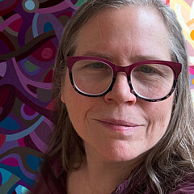

About Mandy Budan
I have been painting the Canadian landscape for over 25 years.
I look for echoes all around me; the way the shape of a leaf follows the curve of a cloud, or the way the setting sun limns the distant hills and sets a northern lake alight.
My Work
I paint in acrylic on wood. My abstract paintings are a mosaic of opaque shapes that come together to describe the landscape.
Where I Paint
Most of what I paint comes from Ontario - Georgian Bay, Muskoka, Haliburton, the Ottawa Valley - these are my muses. I spend time in provincial parks, conservation areas and the quiet green spaces in between, chasing that particular combination of light and colour that makes me want to pick up a brush.
Background
My work is in private and corporate collections in Australia, Canada, China, the U.K. and the U.S. I've been juried into international exhibitions and have received recognition from ISAP, Oshawa Art Association, Pine Ridge Arts, and Canadian Brushstrokes Magazine.